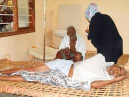

HUDUMA YA KWANZA
YA KIPINDUPINDU:
YA KIPINDUPINDU:
Mgonjwa wa kipindupindu hupoteza maji mengi na madini muhimu mwilini anapoharisha na kutapika. Ili kuokoa maisha ya mgonjwa ni muhimu kuchukua hatua zifuatazo:
1.Mpe mgonjwa dawa ya mchanganyiko wa sukari na chumvi(ORS, vijiko vya chai 6 vya sukari na chumvi nusu kijiko cha chai pamoja na maji lita moja yalio safi na salama), maji ya madafu mara kwa mara.
2.Mpeleke mgonjwa haraka iwezekanavyo katika kituo cha afya kilicho karibu nawe.
